|
SeEDS
|
Classes | |
| struct | Filter |
| Simple filter descriptor (key/value). More... | |
| struct | TemporalQuery |
| Canonical in-memory representation of a temporal query. More... | |
| struct | FilterHasher |
| Hasher for Filter (stable across runs for identical content). More... | |
| struct | TemporalQueryHasher |
| Hasher for TemporalQuery (stable mixing over all fields). More... | |
Enumerations | |
| enum class | Timeframe : uint8_t { NONE = 0 , NOW = 1 << 0 , BEFORE = 1 << 1 , AFTER = 1 << 2 } |
| Timeframe is a bitmask enum so multiple values like NOW and AFTER can be OR'd together into one variable. More... | |
Functions | |
| void | hash_combine (std::size_t &seed, std::size_t h) |
| Combine a hash seed with a hash value (similar to boost::hash_combine). More... | |
| Timeframe | operator| (Timeframe a, Timeframe b) |
| Bitwise OR for Timeframe flags. More... | |
| Timeframe | operator& (Timeframe a, Timeframe b) |
| Bitwise AND for Timeframe flags. More... | |
| std::vector< std::string > | to_fields (const temporal_query::TemporalQuery &q, bool include_timeframe=true, bool include_count=true, bool include_extras=true, bool include_filters=true, bool url_encode=true) |
| Convert TemporalQuery to "key=value" fields (URL-encoded by default). More... | |
| std::string | serialize_kv (const TemporalQuery &q) |
| Serialize as a canonical query-string (stable key ordering for extras). More... | |
| TemporalQuery | from_params (const std::unordered_map< std::string, std::string > ¶ms) |
| Build a TemporalQuery from a key→value map (unknown keys → extras). More... | |
| Timeframe | string_to_timeframe (std::string_view view) |
| Parse a "+""-joined timeframe (e.g., "before+after") into a bitmask. More... | |
| std::string | timeframe_to_string (Timeframe frame) |
| Convert a Timeframe bitmask back to string (order: now,before,after). More... | |
| std::string | serialize_temporal_query (const TemporalQuery &q) |
| Serialize to compact JSON (unknown keys inlined alongside known keys). More... | |
| TemporalQuery | deserialize_temporal_query (std::string_view json_string) |
| Deserialize from JSON, query-string, or path-like input. More... | |
| std::vector< Filter > | parse_filters (std::string_view csv) |
| Parse filters CSV into vectors of Filter (values set empty). More... | |
| std::string | filters_to_csv (const std::vector< Filter > &filters) |
| Join filters back into a CSV string (keys only). More... | |
| std::unordered_map< std::string, std::string > | params_from_pathlike (std::string_view s) |
| Parse parameters from a path-like string (heuristics for legacy forms). More... | |
| std::unordered_map< std::string, std::string > | params_from_querystring (std::string_view qs) |
| Parse a query-string form (k=v&k2=v2), URL-decoding keys/values. More... | |
| std::string | to_path (const TemporalQuery &q, const bool include_timeframe=true, const bool include_count=true, const bool include_extras=true, const bool include_filters=true) |
| Format a TemporalQuery as a path of the form /[type]/[id]/params(date="…"&count="…"&timeframe="…") If q.type is empty, the leading “/type” is omitted. More... | |
| std::string | temporal_query_hash_string (TemporalQuery const &q) noexcept |
| Convenience: stringify the hash of a TemporalQuery. More... | |
|
strong |
Timeframe is a bitmask enum so multiple values like NOW and AFTER can be OR'd together into one variable.
Bitmask of timeframe flags (combinable).
Flags can be OR'ed together (e.g., NOW|AFTER). Use timeframe_to_string and string_to_timeframe to round-trip between bitmask and string.
| Enumerator | |
|---|---|
| NONE | |
| NOW | |
| BEFORE | |
| AFTER | |
| temporal_query::TemporalQuery temporal_query::deserialize_temporal_query | ( | std::string_view | json_string | ) |
Deserialize from JSON, query-string, or path-like input.
| json_string | Either JSON (starts with '{' or '['), "k=v&...", or a path-like form. |
| nlohmann::json::parse_error | on invalid JSON. |
| std::invalid_argument | on bad timeframe tokens (non-JSON forms). |
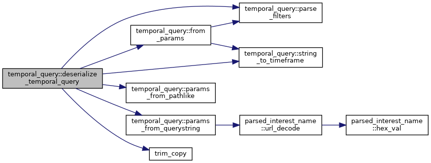
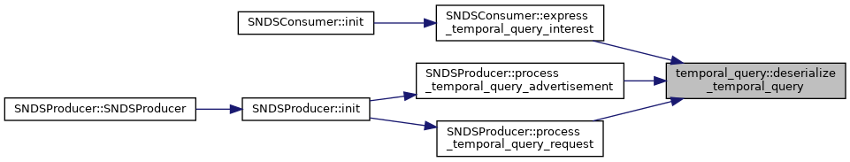
| std::string temporal_query::filters_to_csv | ( | const std::vector< Filter > & | filters | ) |
Join filters back into a CSV string (keys only).
| filters | Vector of filters. |
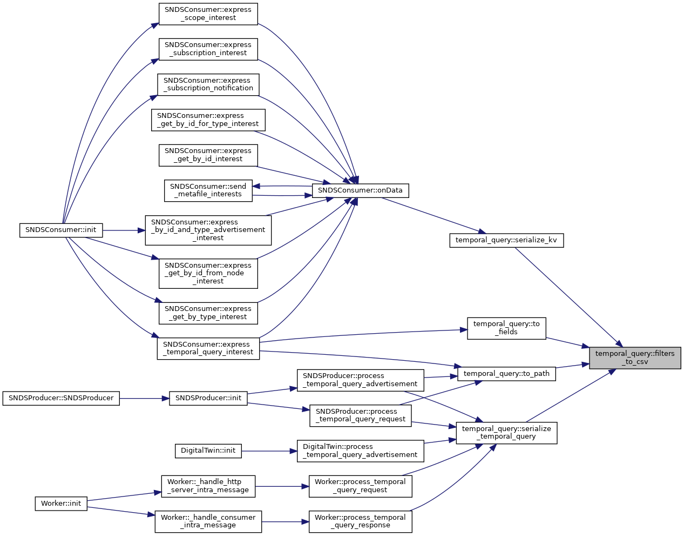
| temporal_query::TemporalQuery temporal_query::from_params | ( | const std::unordered_map< std::string, std::string > & | params | ) |
Build a TemporalQuery from a key→value map (unknown keys → extras).
| params | Input map (already decoded). |
| std::invalid_argument | if timeframe tokens are invalid. |
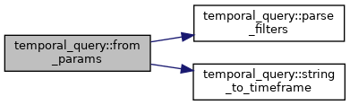
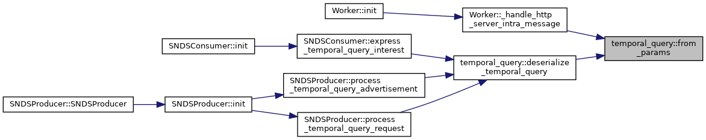
|
inline |
Combine a hash seed with a hash value (similar to boost::hash_combine).
| seed | In/out seed to mix into. |
| h | New hash value to combine. |
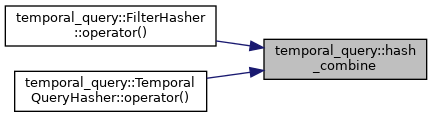
Bitwise AND for Timeframe flags.
Bitwise OR for Timeframe flags.
| std::unordered_map< std::string, std::string > temporal_query::params_from_pathlike | ( | std::string_view | s | ) |
Parse parameters from a path-like string (heuristics for legacy forms).
| s | Example: "/SNDS/car2/getByID:car2" or "/SNDS/Car/getByID:car2". |
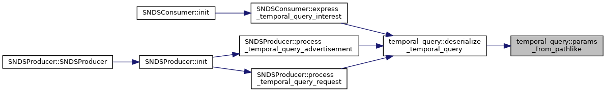
| std::unordered_map< std::string, std::string > temporal_query::params_from_querystring | ( | std::string_view | qs | ) |
Parse a query-string form (k=v&k2=v2), URL-decoding keys/values.
| qs | Raw query-string (without leading '?'). |
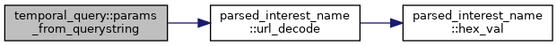
| std::vector< temporal_query::Filter > temporal_query::parse_filters | ( | std::string_view | csv | ) |
Parse filters CSV into vectors of Filter (values set empty).
Turn a CSV of filter-keys into a vector<Filter> (value left empty)
| csv | Comma-separated keys. |
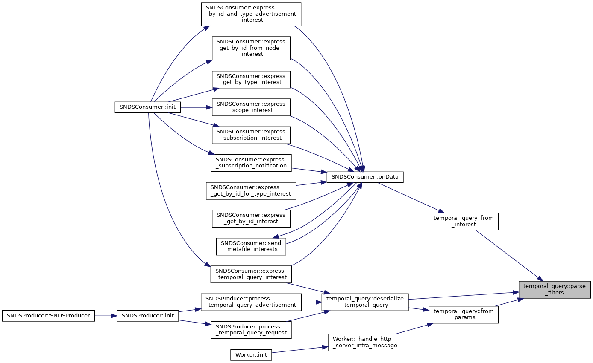
| std::string temporal_query::serialize_kv | ( | const TemporalQuery & | q | ) |
Serialize as a canonical query-string (stable key ordering for extras).
| q | Source query. |
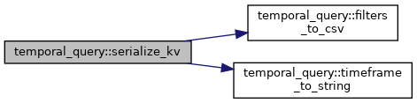
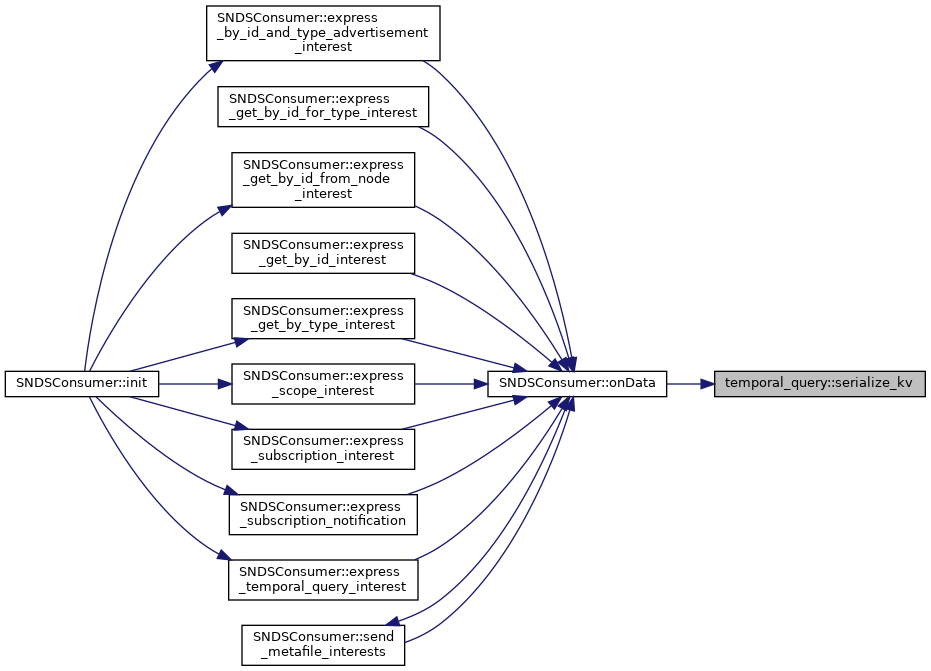
| std::string temporal_query::serialize_temporal_query | ( | const TemporalQuery & | q | ) |
Serialize to compact JSON (unknown keys inlined alongside known keys).
| q | Source query. |
extras entries are written as top-level keys (stringified). filters are encoded as a CSV string "k1,k2,...". 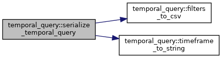
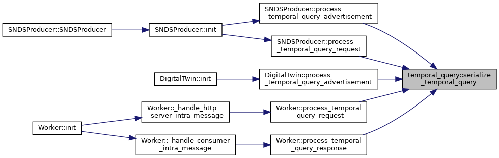
| temporal_query::Timeframe temporal_query::string_to_timeframe | ( | std::string_view | view | ) |
Parse a "+""-joined timeframe (e.g., "before+after") into a bitmask.
| view | Input string. |
| std::invalid_argument | on unrecognized tokens. |
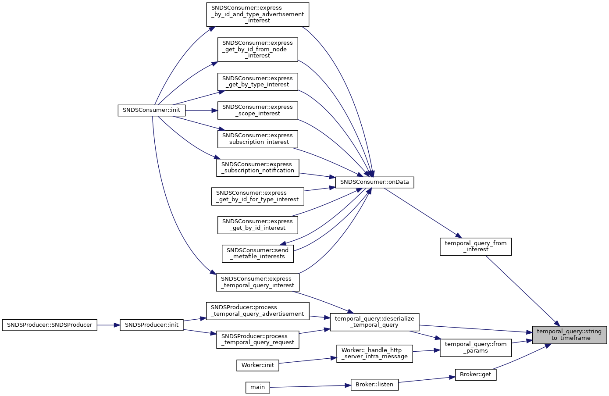
|
inlinenoexcept |
Convenience: stringify the hash of a TemporalQuery.
| q | Source. |
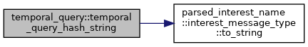
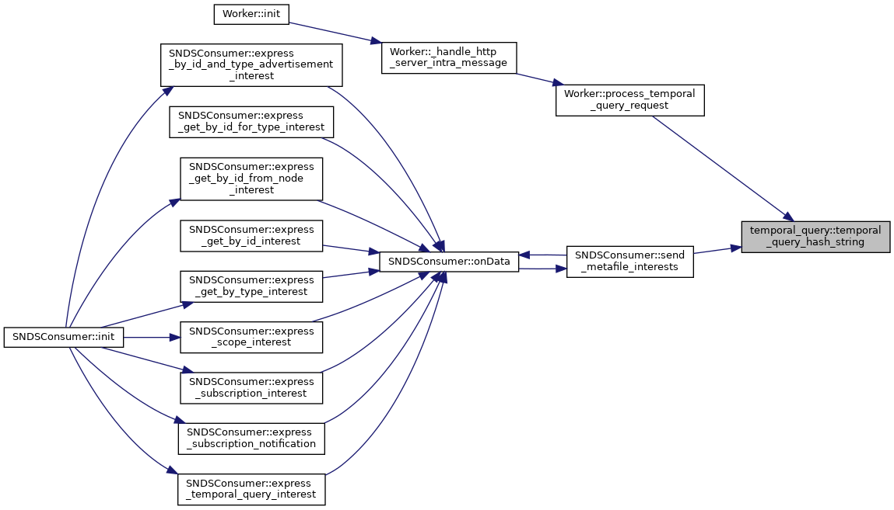
| std::string temporal_query::timeframe_to_string | ( | temporal_query::Timeframe | frame | ) |
Convert a Timeframe bitmask back to string (order: now,before,after).
Convert a Timeframe bitmask back into a "+"-delimited string.
| frame | Flags to stringify. |
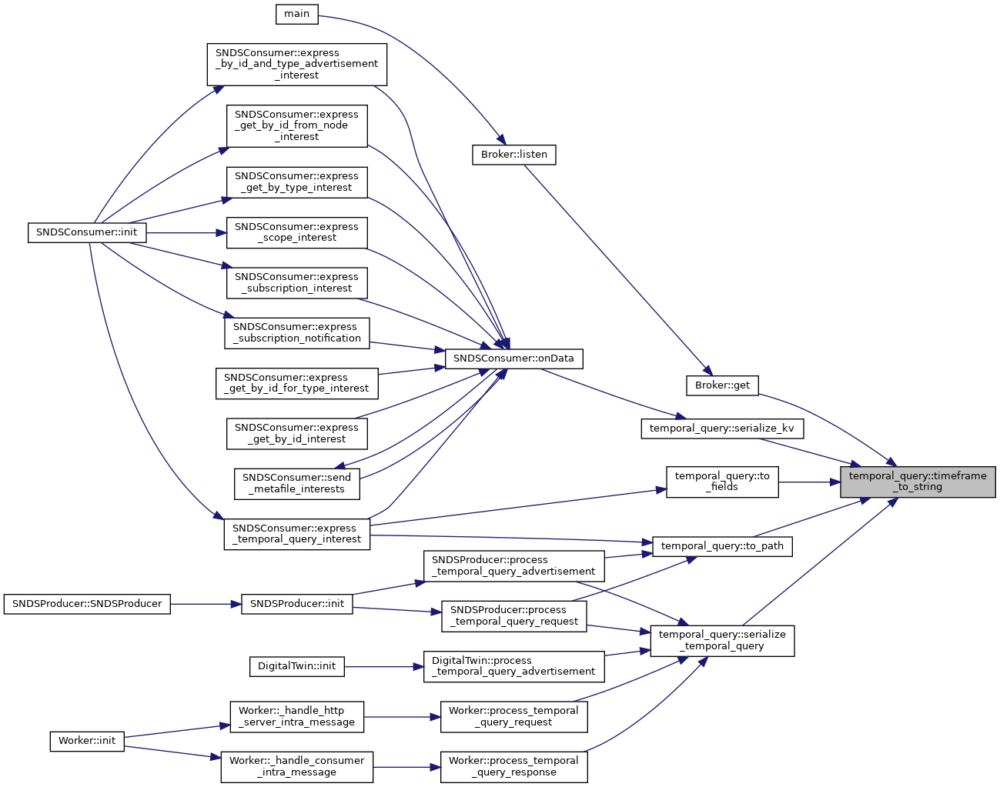
| std::vector< std::string > temporal_query::to_fields | ( | const temporal_query::TemporalQuery & | q, |
| bool | include_timeframe = true, |
||
| bool | include_count = true, |
||
| bool | include_extras = true, |
||
| bool | include_filters = true, |
||
| bool | url_encode = true |
||
| ) |
Convert TemporalQuery to "key=value" fields (URL-encoded by default).
| q | Source query. |
| include_timeframe | Include "timeframe=..." field. |
| include_count | Include "count=..." field. |
| include_extras | Include extras sorted by key. |
| include_filters | Include "filters=..." CSV field. |
| url_encode | URL-encode both keys and values if true. |
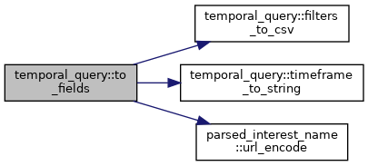
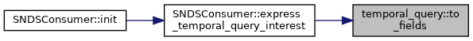
| std::string temporal_query::to_path | ( | const TemporalQuery & | q, |
| const bool | include_timeframe = true, |
||
| const bool | include_count = true, |
||
| const bool | include_extras = true, |
||
| const bool | include_filters = true |
||
| ) |
Format a TemporalQuery as a path of the form /[type]/[id]/params(date="…"&count="…"&timeframe="…") If q.type is empty, the leading “/type” is omitted.
Format a TemporalQuery as a slash-separated path.
Output shape: /[type]/[id]/date=.../timeframe=.../count=.../[extras...]/filters=... Entries are URL-encoded. Omitted fields are skipped.
| q | Source. |
| include_timeframe | Include timeframe component. |
| include_count | Include count component. |
| include_extras | Include extras components. |
| include_filters | Include filters CSV component. |
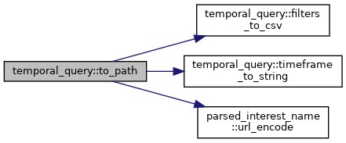
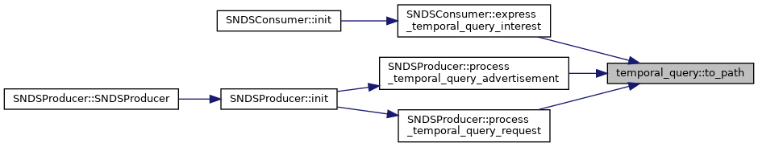